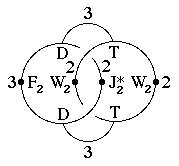
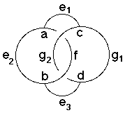

209
209
 211
211 Orbifold Atlas Home Page
Orbifold Atlas Home Page
 Crystallographic Topology Home Page
Crystallographic Topology Home Page
Underlying Topological Space: S3; Figure Pseudo-Symmetry (FPS): 2
Euclidean 3-Orbifold with Invariant-Lattice-Complex Letters
(left), Wyckoff Site Letters (right)
 
| FPS | Mult | Lattice Comp | Group Graph | Wyckoff Set | 2[4]Cover |
| 8-2 | D | 332 | a, b | ||
| 16-2 | T | 322 | c, d | ||
| 32-2 | D4[-]T2 | 32<3>33 | (e1:c-a, e3:b-d | ||
| 32-1 | D4[F2]D4 | 32<3>32 | e2:a-b)1 | ||
| 48-1 | D6[J*2]D6 | 33<2>33 | (f:a-b)2 | ||
| 48-2 | T3[W2]T3 | 32<2>32 | (g1:c-d, g2:d-c)3 | ||
| 96 | 1 | h:efgh | |||
| 2 | 96-2 | W22[-]J*2 | 2*=22<1>22 | h1:g1-f. h2:g2-f | #208(i) |
| 2 | 96-2 | F23[-]W22 | 2*=33<1>22 | h3:e1-g2, h4:e2-g1 | #208(k,l) |
| 96-1 | m* | (h5:ef)4 | #227(g) |
| Struct-Mult | Critical Points | Heegaard Surf | Wyckoff Cut |
| Diam-1s | D/T/T/D | H32{22} | e2 g2 f g1 |
| NaTl-1 | DD/TF2T/W2W2/J*2 | E22{222211} | (f1)(f2)(g11)(g12)(g21)(g22) |
Invariant Sites: (1) [c,a,e2,b,d] @ 1/8,1/8,1/8 + (1/8,1/8,1/8) x4; (2) 0,0,0 + (1/4,0,0) x2; (3) [c,g1,d,g2]& @ 1/8,1/8,1/8 + (0,-1/8,1/8) x4 &; (4) x,x,z
209
211
Orbifold Atlas Home Page
Crystallographic Topology Home Page
Page last revised: